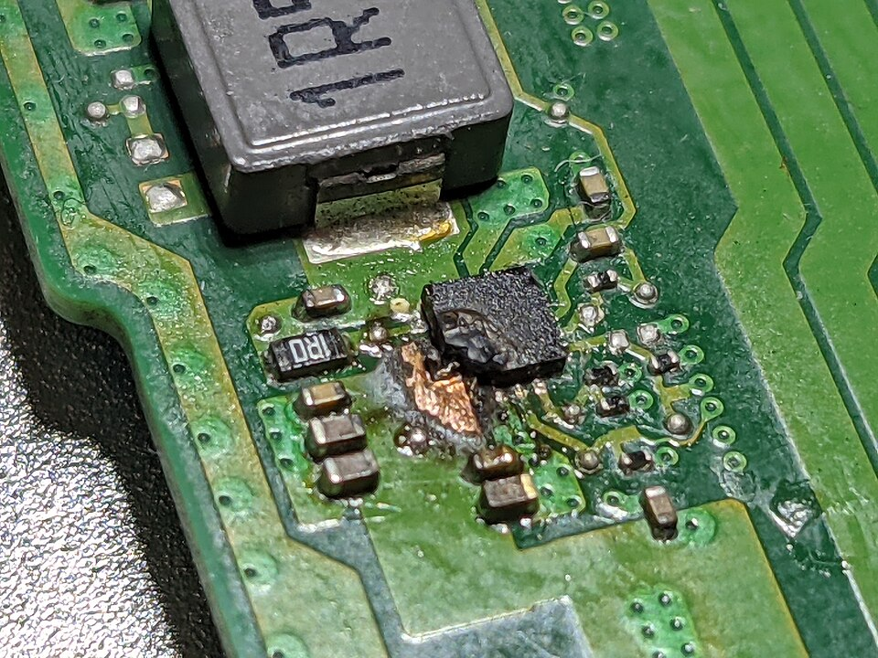

Build a repair portfolio and a shop workflow
Turn real bench work into evidence for a BMS role, electronics service shop or repair business. Start with a few jobs you can diagnose, quote, verify and document consistently.
Build three cases that show your judgement

Photo by Profpcde, resized. Original photo · CC0.

| Route | Practice case | Evidence to show |
|---|---|---|
| BMS or controls | Air handler fan proof fails | Point schedule, proof timeout trend, reset and final normal cycle. Explain how you verified a command and its independent feedback. |
| Welder repair | Rectifier trainer fault and, when ready, a supervised equipment case | Input/output readings, fault isolation, and who performed or verified the return-to-service checks. |
| Laptop service | Boot failure with a removable test SSD or trainer run rail missing | Symptom category, first missing prerequisite, before/after results and tests you did not need to perform. |
| Phone service | Display module exercise or charging comparison | Baseline, reference accessory or module, post-repair function matrix and any unresolved issue. |
Write each case as problem, prediction, test and result. Include one unproductive hypothesis and the observation that ruled it out. Label simulated and supervised jobs clearly. Use your own training equipment for any portfolio photos or reports and remove device identifiers and customer information.
Use the same five steps for a paid job
Watch on YouTube · Repair Business Workshop with iFixit's Kyle Wiens, Part 1 · iFixitPro
Listen for how a repair business defines its work and communicates with customers. Compare that with your intake and handover notes.
Intake. Record symptoms, contents received, condition, data priority and the owner-approved scope. Ask the owner to handle account authentication and backups. Keep access limited to what testing needs.
Assessment. Confirm what you can reproduce. Document the proposed work, part provenance, diagnostic fee, approval threshold and any referral. Agree what happens when parts are unavailable or new damage is found.
Quote. Include parts, sourcing and consumables, expected labour and time for final tests. For a worked example with arbitrary units, a 55-unit part, 5 units in consumables, 35 in labour and 10 in overhead cost 105 units to deliver. A 125-unit quote leaves 20 before tax, rework or warranty costs. Decide the scope and quote again if the diagnosis changes.
Repair and retest. Record changes and run the original fault test, affected function checks and applicable final safety checks. Log measurements, relevant part numbers and who checked them.
Handover. Explain the fault and result plainly. Give the customer the agreed outcome, material limitations and next step for incomplete work. Keep a record of authorisation, tests and disposal or return of old parts.
In Australia, consult the ACCC repair-notice requirements before accepting applicable work involving data-storing products or potentially refurbished parts. Use the official wording and timing where specified. Check the relevant local rules for your service scope in C11. ACCC repair notices.
Use the cases to get experience
For BMS, bring a functional test sheet to a trainee-controls or commissioning interview and explain what a trend proved. For consumer repair, practise documented module services on spares and ask a local repair shop for supervised bench work. At the family tools shop, take intake and external checks first and pair up with a competent repairer for inside-machine diagnosis and release. Keep the first service menu within the jobs you can retest and support reliably. Use C12 to schedule practice and R04 for welding records.